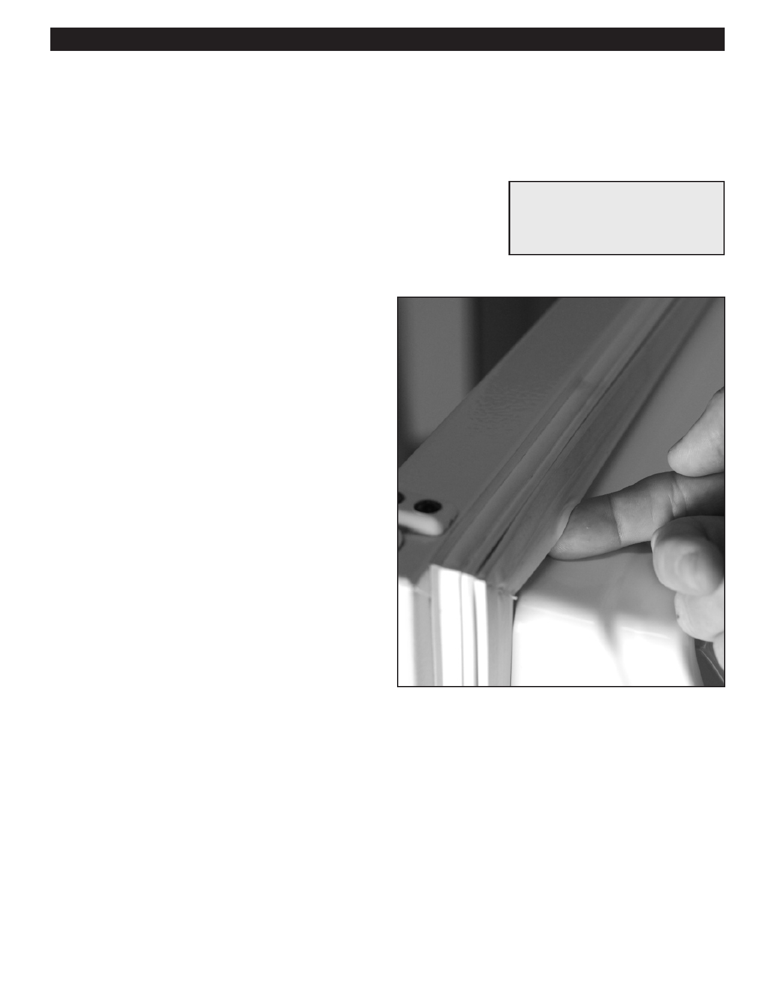

PA RT I C I PA N T R E S O U R C E G U I D E
Replacing a Door Gasket
The door gasket provides a seal to keep the cold inside the refrigerator and the heat
outside the refrigerator.
Safety
Tools and Materials Needed
Make sure the power to the refrigerator is off.
Screwdriver
Use lockout/tagout procedures.
New Gasket
Wear eye protection when working with electrical systems.
How-to Steps
1. Find an exact replacement for the door gasket.
2. Soak the gasket in hot water.
3. Loosen (do not remove) the screws that hold the old
gasket in place.
4. Pull out old gasket.
5. Push new gasket under the metal retainer and tighten
the screws.
6. Close door and check for gaps. Adjust as necessary.
Note: Newer models have a kerf style door gasket.
Simply grasp and remove in the corner and press the
gasket into place.
Notes:
83